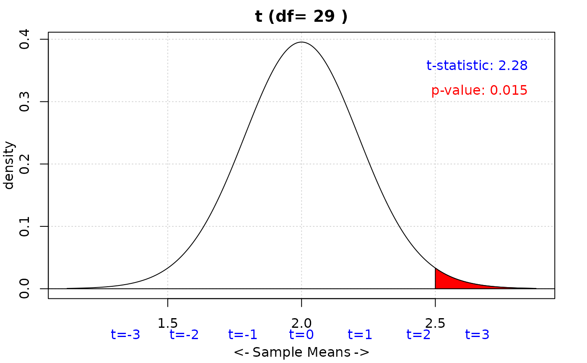
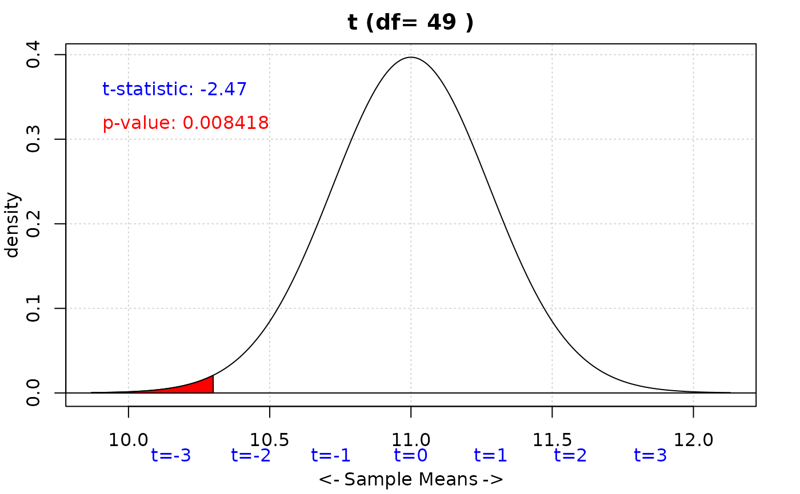
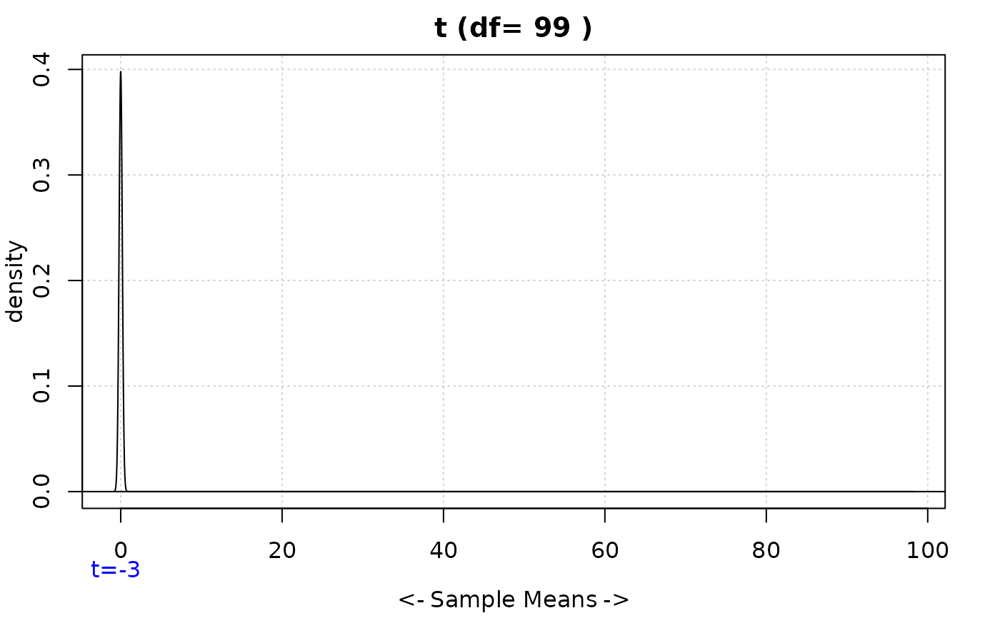
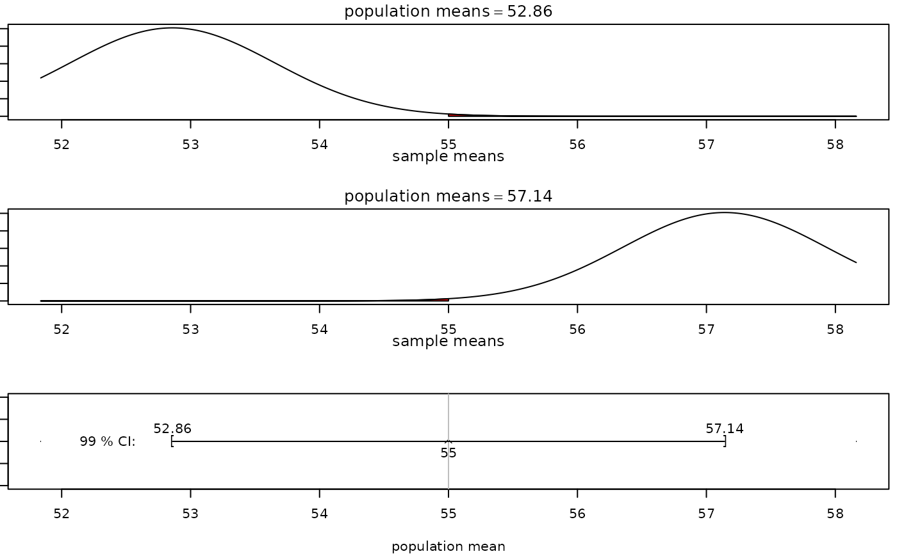

onesamplet calculates a one sample t-test and/or interval from summary statistics.
It defaults to a hypothesized population mean of 0. You can optionally set an
alternative hypothesis and confidence level for a two-sided confidence interval.
Examples
iscamonesamplet(
xbar = 2.5,
sd = 1.2,
n = 30,
alternative = "greater",
hypothesized = 2
)
#>
#> One Sample t test
#>
#> mean = 2.5, sd = 1.2, sample size = 30
#> Null hypothesis : mu = 2
#> Alternative hypothesis: mu > 2
#> t-statistic: 2.282

#> p-value: 0.01499991
iscamonesamplet(
xbar = 10.3,
sd = 2,
n = 50,
alternative = "less",
hypothesized = 11
)
#>
#> One Sample t test
#>
#> mean = 10.3, sd = 2, sample size = 50
#> Null hypothesis : mu = 11
#> Alternative hypothesis: mu < 11
#> t-statistic: -2.475

#> p-value: 0.00841815
iscamonesamplet(
xbar = 98.2,
sd = 2,
n = 100,
alternative = "two.sided",
conf.level = 0.95
)
#>
#> One Sample t test
#>
#> mean = 98.2, sd = 2, sample size = 100
#> Null hypothesis : mu = 0
#> Alternative hypothesis: mu <> 0
#> t-statistic: 491

#> 95 % Confidence interval for mu: ( 97.80316 , 98.59684 )
#> p-value: 1.824574e-169
iscamonesamplet(xbar = 55, sd = 5, n = 40, conf.level = 0.99)
#>
#> One Sample t test
#>
#> mean = 55, sd = 5, sample size = 40
#> 99 % Confidence interval for mu: ( 52.85921 , 57.14079 )
